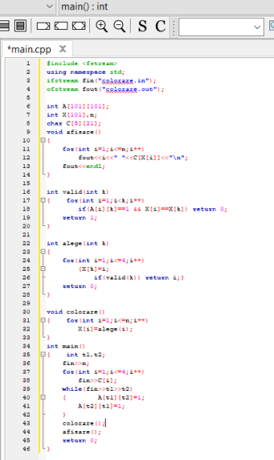
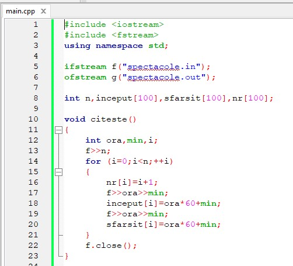
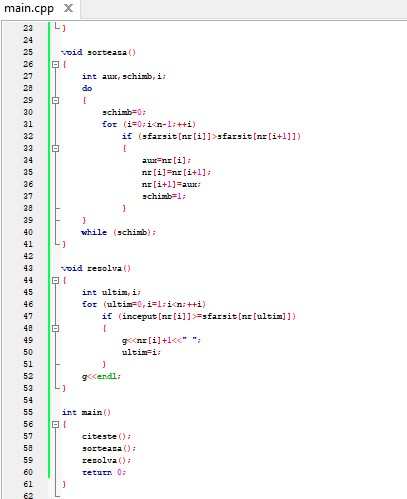
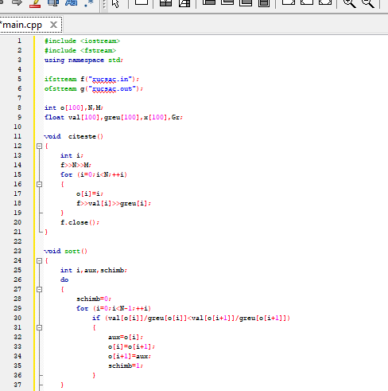
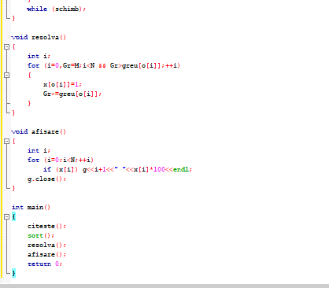

Problema 1. Fiind dată o hartă cu n țări, se cere o soluție de colorare a hârtiei, utilizând cel mult patru culori, astfel încât două țări ce au frontiera comună să fie colorate diferit. Este demonstrat faptul că sunt suficiente numai patru culori pentru ca orice hartă să poată fi colorată.
Problema 2. Managerul artistic al unui festival trebuie să selecteze o mulțime cât mai amplă de spectacole ce pot fi jucate în singura sală pe care o are la dispoziție. Știind că i s-au propus n spectacole și pentru fiecare spectacol i-a fost anunțat intervalul în care se poate desfășura [Si, Fi] (Si reprezintă ora și minutul de început, iar Fi ora și minutul de final al spectacolului i), scrieți un program care să permită spectatorilor vizionarea unui număr cât mai mare de spectacole.
|  |  |
Problema 3. Se consideră că dispunem de un rucsac cu capacitatea M și de N obiecte, definite fiecare prin greutate și valoare, ce trebuie introduse în rucsac. Se cere o modalitate de a umple rucsacul cu obiecte, astfel încât valoarea totală să fie maximă. Este posibil ca oricâte obiecte și bucăți din obiecte să fie introduse.
|  |  |